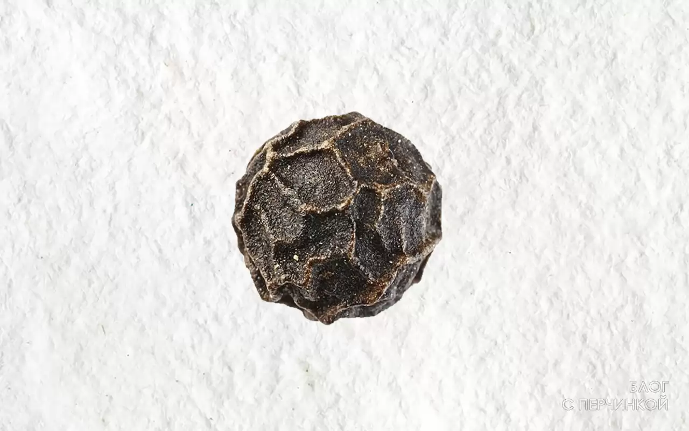

Webp — формат сжатия изображений с потерями и без потерь качества, предложенный компанией Google Inc. в 2010 году. Основан на алгоритме сжатия неподвижных изображений (ключевых кадров) из видеокодека VP8. Использует контейнер RIFF.
Формат JPG
Формат Webp

Присравнивании изображений стоит обратить внимание,сколько делталей теряет Webp. При равном размере изображения, JPG выигрывает у Webp. Обратите внимание на детальность прорисовки пор кожи и правый зрачок.
Формат JPG

Формат Webp

Изображение на фоне обычного листа бумаги. Мелкие детали на белый фоне в WEBP тоже страдают. При равном размере изображения, JPG одерживает победу над WEBP. Обратите внимание на количество деталей мягкого белого фона.
Формат JPG

Формат Webp
На картинках присутствует большое количество градиентных переходов. Формат Webp используется без сжатия, на формате JPG использовалось сжатие 70 от ориганала. При приближении видно, что здесь Webp справляется немного лучше.
Формат JPG
Формат Webp
Здесь хотел показать, насколько Webp хорош в сильной степени сжатия мягких градиентов. JEPG весит 12 КБ, в то время как Webp 5 КБ, при этом сохраняя хорошее качество картинки.
WebP полностью поддерживается браузерами Chrome, Opera, Opera Mini, Android-браузер и Chrome для Android. Firefox, Internet Explorer и Safari не имеют полной поддержки